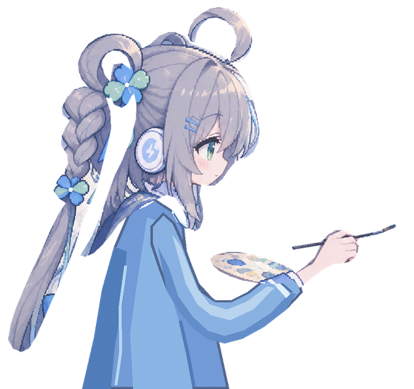

MAKE YOURSELF AT HOME
今天，想玩点什么？
小小的快乐，在这里慢慢收集。
GOOD WORDS, GOOD MOOD
今天也要元气满满 ✦
✿ 来聊点开心的吧～
♡
✧✳ 留一点温柔在这里01 / LITTLE CONVERSATIONS
云边聊天室
碎碎念、小心情，都有地方安放。
坐下来聊聊A LITTLE RUN, A LITTLE FUN♥ ♥ ♥ 快乐满格
02 / CATCH THE LITTLE JOYS
小洛快跑
和小洛一起追风，顺便捡一笼快乐。
出发，去追风A PIXEL OF INSPIRATION

一格一格，画出喜欢03 / COLOUR YOUR LITTLE WORLD
小洛涂色室
借一点颜色，把小灵感画出来。
拿起小画笔✧
还有好多小美好，正在路上呢。
✧